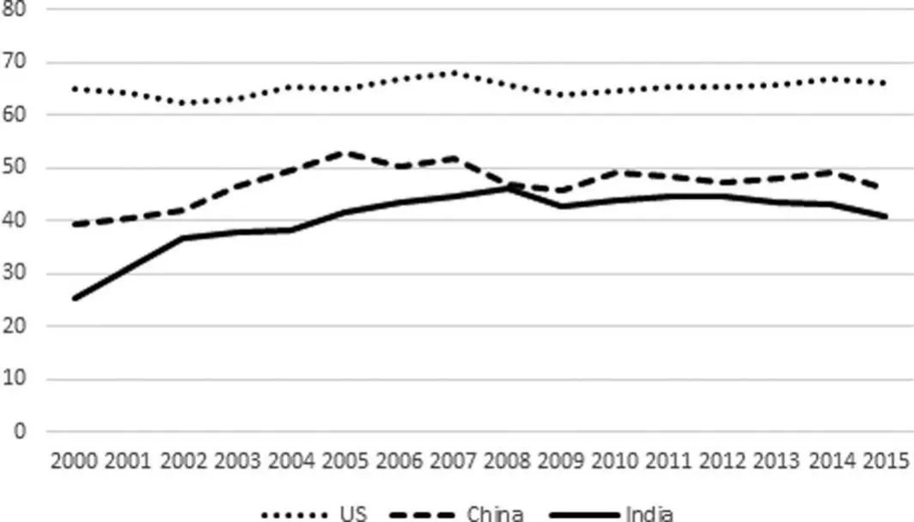
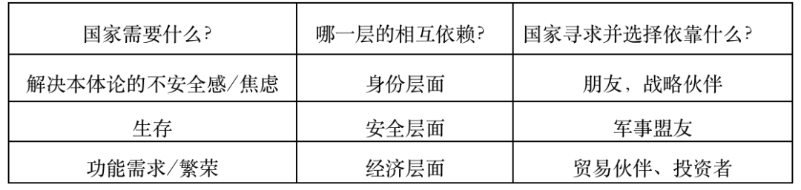
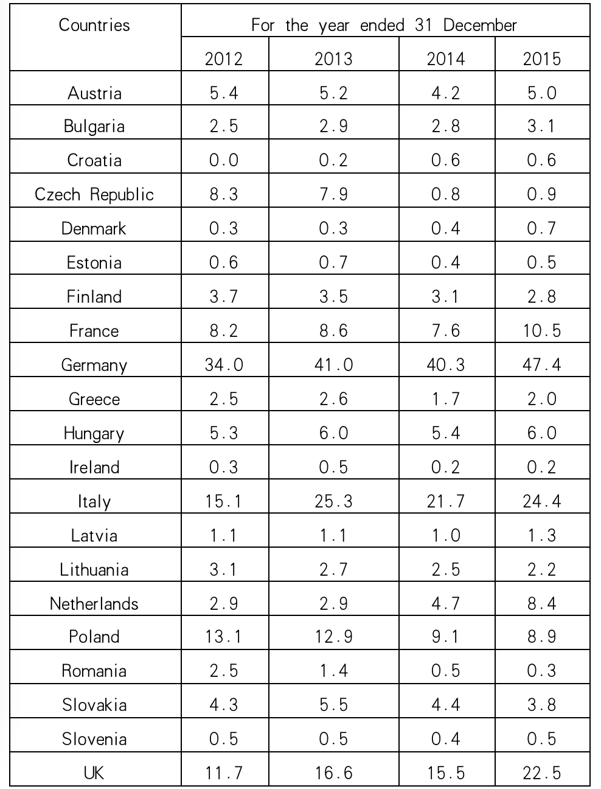
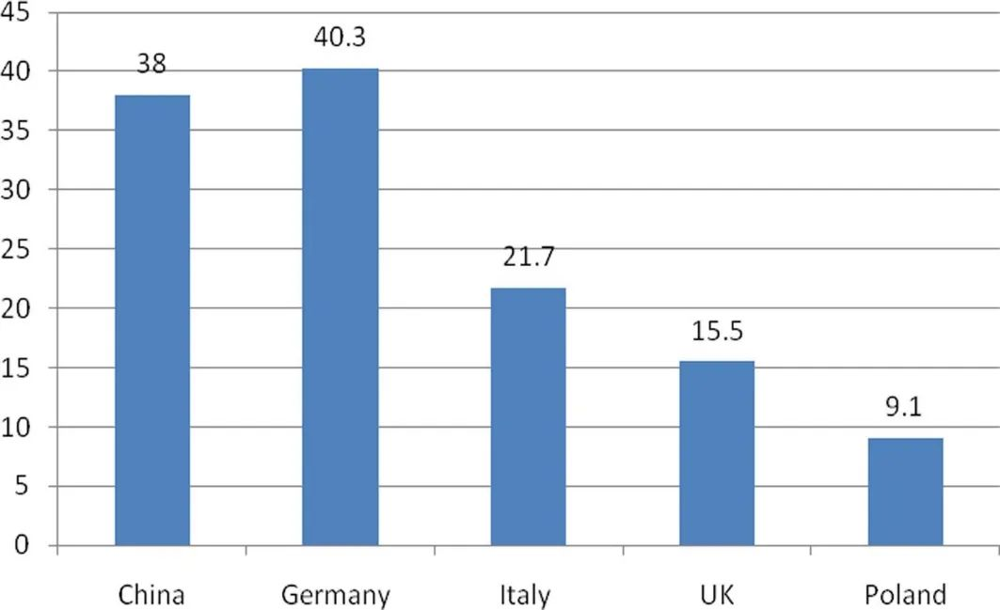

收录于合集 #理论研究 96个

作品简介
【作者】 郑华为，肯特大学全球挑战博士中心(GCDC)博士生，硕士毕业于牛津大学圣安东尼学院，研究兴趣为欧亚再一体化，尤其是欧亚经济联盟。
【编译】 梁坤（国政学人编译员 华威大学国际政治经济学硕士）
【排版】 毛雅欣
【美编 】方引弓
【来源】 Zheng, H. (2020). “Fragile interdependence: the case of Russia-EU relations”. Cambridge Review of International Affairs , https://doi.org/10.1080/09557571.2020.1839018.
期刊简介
《剑桥国际事务评论》（Cambridge Review of International Affairs）于1985年创立，是国际关系同行评审学术期刊，以季刊形式发行。由剑桥大学国际研究中心（现隶属牛津大学政治与国际关系学院）编辑，Routledge组织出版。2019年学术影响因子为1.366。
脆弱相互依赖：
以俄罗斯与欧盟关系为例
Fragile interdependence:
the case of Russia-EU relations
郑华为
内容提要
本文将国际关系理论中的 相互依赖之争 置于 当代世界政治 中，针对当前的 去全球化 动态，重新审视了复合相互依赖的概念，并提出 “脆弱相互依赖” 的概念，用以探讨 相互依赖的可逆性 。乌克兰危机期间和之后的 俄罗斯与欧盟 的关系，是本文的核心案例。它们在 （非能源）贸易和天然气 这两方面的相互依赖是重点。尽管在这场地缘政治危机中，这两个层面都发生了 逆转 ，但两者呈现出的逆转模式明显不同。对这两者的比较研究说明了理论辩论的影响，更重要的是，它说明了复合或脆弱相互依赖理论的相关程度。这篇文章认为，脆弱相互依赖将更好地捕捉关系中的反转现象，但复合相互依赖可能仍然有助于解释颇具韧性的相互依赖关系中的反弹现象。
正文
01
引言
相互依赖的关系不一定会一直加深，它们可以 被逆转 。在这篇文章中，作者认为讨论相互依赖关系时需要具体阐明其类型，并且提出了“脆弱相互依赖”的概念，这与复合相互依赖不同。基欧汉和奈提出的复合相互依赖，尽管在某些情况下存在，但不能被认为是相互依赖的唯一类别。在 去全球化 和 地缘政治 环境动荡 的背景下，冲突可能会在不同层面发生，并导致 相互关系的分离 和 相互依赖的减少 。因此，在这些当代发展的背景下，提出脆弱相互依赖的概念能够推动国际关系辩论更进一步。
在实证方面，本文以俄罗斯- 欧盟关系为例，说明了理论争论所涉及的概念，复杂和脆弱的相互依赖关系。冷战结束30年来，俄罗斯与欧盟的双边关系仍然是一对关键但充满波折的关系。2008年俄格战争后，俄欧关系进一步恶化，并演变为乌克兰危机。同时，与冷战时代苏联与西方关系时期相比，俄罗斯与欧盟变得联系更加紧密且依赖加深。
学者们一直用相互依赖理论来讨论俄罗斯与欧盟之间的能源贸易与非能源贸易关系，并提及欧盟- 俄罗斯的能源关系既有合作因素，也有冲突因素。本文将详细研究它们的相互依赖关系的 两个方面：非能源贸易和天然气 关系。这两方面的案例都说明了相互依赖的逆转，这表明脆弱相互依赖这一新概念确实可以对案例研究有所启发。但这两个层面上的逆转表现出不同的模式。非能源贸易关系清楚地说明了相互依赖关系的减少，在这一关系中出现的更大和更持久的逆转，表明相互依赖的这一层面的复原力较弱。而天然气关系经历了更为复杂的转变。在乌克兰危机之后，俄欧的天然气相互依赖关系出现了暂时的逆转。然而，当纳入最近几年的数据时，该关系似乎出现了坚实的反弹。
案例研究说明了复合或脆弱相互依赖两个理论的相关程度。一方面，脆弱相互依赖可以更好地捕捉关系中的反转。另一方面，在某些情况下，复合相互依赖可能仍有助于解释经济的反弹和韧性。
02
理论回顾：引入脆弱相互依赖
从基欧汉和奈的复合相互依赖框架出发，作者认为，相互依赖的 可逆性 在他们的研究中没有得到充分探索。作者因此提出 脆弱相互依赖 的概念，并认为 相互依赖是可逆的 ，会发生变化的。
2.1出发点：基欧汉和奈所认为的相互依赖
基欧汉和奈（2012）认为 “ 相互依赖的弱点 ” 是在讨论“如果政策框架可以改变，情况会是什么”。作者认为这种脆弱性的概念 只适用于 相互依赖关系中的 行为体 ，而 不适用于相互依赖本身 。在复合相互依赖框架中， 可逆性问题变得无关紧要 。它具有三个主要特征：（1）多渠道；（2）议题之间无等级之分；（3）军事力量的次要作用。复合相互依赖描绘了一个极其难以解开的复杂关系网。复合互依赖是 复杂的 ，因为它在渠道和问题领域方面是极其复杂的和多层次的。 而复杂性使其稳定，并几乎不受地缘政治动荡的影响 。
然而，复合相互依赖理论受到了质疑。基欧汉和奈（1987）也承认，“复合相互依赖是一种 理想类型 ，而不是对世界政治的准确描述，所以它与 当代世界政治 的相关性是 模糊不清 的”。在此，作者认为，这个理论框架需要被修改以更好地适用于当下的世界政治环境。

图1：中美印三国的KOF经济全球化指数（2000-2015）
首先，需要从去全球化的角度 重新考虑复合相互依赖 ，因为去全球化提出了一个相反的论点和一个 相互依赖可能变得脆弱 的场景。图1显示了三个国家的经济全球化指数，表明它们的经济全球化水平呈现出波动甚至 下降的趋势 。因此，鉴于我们这个时代的去全球化动态，20世纪70年代提出的理论与当代世界政治的相关性是有争议的。
其次，复合相互依赖框架面临着 相互依赖被操纵 的挑战。相互依赖也可以被 武器化 ，对相互依赖的操纵形式包含破坏供应链、技术分离或金融武器化等，本质上它反映了米尔斯海默的主张—— 政治（甚至战略思维） 压倒了经济思维。
最后，新冠肺炎大流行病进一步挑战了复合相互依赖与当代世界政治的相关性。新冠病毒危机加强了去全球化的趋势，并警示各国相互依赖被操纵的危险。
2.2相互依赖：寻找定义
作者对复合相互依赖框架中对 “依赖” 的定义也提出质疑。根据基欧汉和奈（2012）的观点，“依赖”意味着“被外力决定或显著影响的状态”。类似的，罗斯克兰斯等人（1977）将 “相互依赖” 定义为“国家利益的 直接和积极联系 ，这样当一个国家的 立场发生变化 时，其他国家的立场 也会受到影响 ，而且 方向相同 ”。
鲍德温（1980）对这种思维方式提出了挑战，认为“依赖”并不意味着 “受到外力显著影响的状态” ，而指的是“一种 从属关系 ，在这种关系中，一件事得到另一件事的 支持 ，或者 必须依靠 另一件事来 满足一种需要 ”。这一观点得到了卡普拉索的支持。
作者认为，依赖和相互依赖，不仅仅意味着A受到B的显著影响。如果说B的政策变化带来了A的变化，那么这种情况最好用共变性或者响应来描述，而不是依赖。换句话说，A对B的政策变化是有反应的（不是依赖的）。作者同意鲍德温和卡普拉索的观点，认为在常识性的用法中依赖（dependence）是指依靠（reliance），而不是受到显著影响的状态。
鲍德温（1980）认为，这两种定义之间的关键区别“与 打破（相互依赖）关系 的难易程度有关”。沃尔兹（1970）也认为“相互依赖要求一种难 以被打破的关系 ”。同样，米尔纳（1991）认为，“相互依赖指的是所有参与者都 因终止关系而付出代价 的情况。相互依赖还意味着 行为者效用的满足是不独立的 ”。
2.3脆弱的相互依赖：
一个更具包容性的框架
作者对相互依赖的定义是:在相互依赖的 二元关系 中，A从B那里获得收益来满足A自己的需求，反之亦然。依赖本质上意味着 寻求支持和获得利益 ，而相互依赖意味着 双向的依赖 ，在这种依赖中，双方都 必须因其需求而相互依赖 。这一定义本身就包含了 解除依赖的成本 。如果一种相互依赖的关系被破坏了， A就不再像以前一样 ，从B那里获得利益来满足自己的需求。此外，如果一种相互依赖的关系被破坏甚至终止，双方都 需要找到替代方案 来替代无法再获得的利益。基于这一定义，作者建立了一个 脆弱相互依赖的理论框架 ，其有三个主要假设:
首先，脆弱相互依赖理论认识到相互依赖是一种普遍现象，而复合相互依赖可能并不常见。在国际体系中，完全自给自足是罕见的。国家和非国家行为体都必须依靠他者满足各种需求。依赖的程度或高或低，在一组二元关系中，双方对彼此的依赖程度往往不同。然而，一个不依赖任何他者的国家甚至是超级大国，鲜有存在。从这个意义上说， “相互依赖实际上是国际体系的一个中心特征”（米尔纳1991）。
虽然 相互依赖很普遍 ，但 复合相互依赖很难实现 。复合相互依赖本质上是一种 成熟的、发达的、稳定的 相互依赖形式。它可能存在于 具备战略互信 、 共同安全机制 以及 高度制度化和规范化 关系 的 盟友 之间。然而，并不是每一组相互依赖的二元关系，或者它们相互依赖关系的每一个维度都可以归入这一类。
表一：层级需求和相互依赖的层级

来源：作者自制
其次，脆弱相互依赖性承认 经济层面非常重要 ，但它 超越 了这一纯粹的功能层面。当国家寻求他人的支持或利益时，需要满足的 需求是多方面的 。除了经济需求，国家还有一系列其他需求，包括安全。一个更基本的问题是国家需要解决 本体论上的不安全感或焦虑 。学者们越来越多地研究这种更深层次的，或者可以说是最深层次的需求。这种需求，以及各国为满足这些需求而发展的关系，也应被视为相互依赖，并被概念化。
最后，脆弱相互依赖认为国家的需求是以 等级化和相互联系的方式排列的 ，这决定了 相互依赖的层次 也是以这样的方式排列的。 功能性、经济性需求是基本层面 ，而 生存或安全 需求以及 解决本体不安全和焦虑 的需求是 更高层面 。为了满足每一种需求，各国必须 为了不同的利益 发展相互依赖的关系。这总结在表1中。它表明，更高层次的，或国家更深层次的需求，将为加深相互依赖设定一个界限。如果一方不把另一方视为朋友、可靠的战略伙伴或盟友， 相互依赖的经济层面就会岌岌可危 ，尤其是在地缘政治危机或动荡时期中。
因此， 经济层面 的逆转 反映了国家有意识地适应这种情况所导致的不断变化的环境。在地缘政治危机期间和之后，各国适应这种变化的方式是，有意从与那些 不再被视为朋友或可靠伙伴的国家 的关系中 脱离 。脆弱相互依赖理论将 “反转” 概念化为一种现象，并通过国家 需求等级 和分层安排来解释这种现象。
通过这种方式，脆弱相互依赖将自身与复合相互依赖区分开来。本质上，前者描述了一个场景，在这个场景中，双方在功能需求上相互依赖（通常非常依赖），而他们 并不认为 对方是可靠的军事盟友或真正的朋友。这使得他们相互依赖的关系 特别不稳定 ，而且是可逆的，易变的。更深层的需求限定了，一个行为体 不能安全地 依赖 一个不可靠的另一方 。因此，行为体会 终止或逆转 相互依赖关系， 即使它这样做会付出代价 ，这就是 “脆弱”的含义 。如果 复合相互依赖 能更好地解释相互依赖关系的 稳定性或韧性 ，那么 脆弱相互依赖 就能抓住 反转 这个概念，特别是在当下政治环境中。
03
贸易关系的逆转：
欧盟制裁与俄罗斯的应对措施
本节着眼于 俄罗斯-欧盟（非能源）贸易关系 的发展，特别是在欧盟实施的制裁和俄罗斯采取反制措施的背景下。它们经济相互依赖发生了 明显且持久的逆转 ，这一层面的相互依赖关系弹性较低。2013年11月，在俄罗斯的压力下，乌克兰总统亚努科维奇决定推迟与欧盟签署《联系国协定》。这一背离欧盟的决定引发了抗议，并最终导致亚努科维奇政府被推翻。俄罗斯的回应包括吞并克里米亚和干预乌克兰东部的内部冲突。这反过来又导致了俄欧关系的恶化和冲突。欧盟一致决定首先在2014年3月对俄实施经济制裁。这显示了欧盟各国的团结，以及他们反对俄罗斯吞并克里米亚和干涉乌克兰东部的共同立场。
欧盟对俄罗斯出口的数据显示双方的相互依赖程度在降低。在这场经济战中，他们相互之间的 替代和多样化 努力进一步说明了他们 贸易关系的逆转 。欧盟对俄罗斯的贸易禁运禁止向该国出口军事装备、两用技术和能源开采技术。对武器和军事装备出口的禁运是有效的，然而，这可能会被俄罗斯政府 在受到制裁之前就已推行的进口替代战略 所缓解。俄罗斯也能够找到两用技术出口禁运的替代办法，即从非制裁参与者那里寻求被禁技术的替代品。
欧盟实施的金融制裁对俄罗斯宏观经济的影响更大。被针对的俄罗斯银行和企业获得西方资本的渠道受到限制，可能会立即导致流动性短缺。这些制裁对该国经济构成重大风险。然而，宏观经济数据显示，尽管制裁对宏观经济形势造成的损害是显而易见的，但俄罗斯还是 在短期内成功地 找到了 减轻 对西方资本和投资的 限制 的方案。
作为对这些惩罚性措施的回应，2014年8月，俄罗斯决定禁止从相关国家团体进口产品。其中包括农产品，然而， 欧盟相对较快地 为这些产品找到了 替代市场 。更重要的是，一项研究表明，欧盟成员国与俄罗斯的 经济相互依赖程度 与其实 施制裁的意愿 之间 缺乏明显的负相关关系 。换句话说，一些欧盟成员国支持实施制裁， 即使 它们可能会付出 巨大代价 或者损失比其他成员国更多。这将很好地说明脆弱相互依赖的含义—— 更高层的冲突将超过经济计算和利益 。
总体而言，俄欧贸易关系在乌克兰危机引发的地缘政治动荡中遭遇了 重大逆转 。由于双方都在努力迅速 降低对彼此的依赖 ，它们的相互依赖程度相较之前有所降低。有证据表明， 经济利益 并不是决定一个国家实施制裁意愿的 唯一决定性因素 ，实施制裁意愿的也与 身份和安全等更高层面的因素有关 。
04
更有韧性天然气关系：逆转和反弹
在关于俄欧 能源相互依赖 的关系中， 天然气关系 值得特别关注。欧盟委员会已经认识到，“最紧迫的能源供应 安全问题 是对单一外部供应商 （俄罗斯）的强烈依赖 ，天然气尤其如此”。此外，2006年和2009年的 天然气供应中断 给欧盟的 能源安全 敲响了警钟。与其他能源相比，天然气供应可能更容易受到 地缘政治动荡的影响 。
根据脆弱相互依赖的概念，我们可以观察到它们的天然气关系 在短期内发生逆转 。表2报告了2012-2015年期间俄罗斯对欧盟21国的天然气出口量。2013年，11个欧盟成员国 增加 了从俄罗斯的天然气 进口 。而这一趋势在2014年急剧逆转，21个欧盟国家中有18个 努力减少 从俄罗斯的天然气 进口 。
然而，这种 逆转是暂时的 ，不久之后，他们的天然气关系出现了 强有力的反弹 。在2015年，21个欧盟成员国中有14个国家 再次增加 了从俄罗斯的天然气 进口 。此外，一项长期分析显示，欧盟内部的一些主要买家大幅增加了进口。北溪-2项目的推进进一步表明， 俄欧之间的能源合作将得到加强 。
表二：2012-2015年俄罗斯对21个欧盟成员国的天然气出口量（单位：bcm）

来源: （俄罗斯天然气工业股份公司，2016）中
提供的数据
尽管脆弱相互依赖的概念可以帮助我们捕捉到他们的天然气关系的暂时逆转，我们可能 仍需要复合相互依赖 来解释他们相互依赖关系在这方面的 弹性 。第一，在双方的天然气关系中，俄罗斯和欧盟都存在巨大的弱点。 欧盟很难在短期内找到替代供应商 ， 俄罗斯同样依赖欧洲市场 ，尽管俄罗斯也在寻求天然气出口市场的多元化，但对其他地区的出口数量不足以替代俄罗斯对欧盟的出口。图2比较了向中国输送天然气的计划和俄罗斯天然气工业股份公司向欧盟四大买家出售天然气的数量。说明对华销量只覆盖对德出口。

图2：俄罗斯天然气工业股份公司2014年的预估和实际天然气销售量（单位：bcm）
同时，天然气相互依赖实际上跨越了经济层面，并 隐含着重大安全影响 ，这 放大了双方本就存在的弱点 。出于对 发展和生存 的考虑，俄罗斯和欧盟似乎都愿意保持 稳定和完整 的天然气关系 ，并保护其不受政治因素所影响。
第二，俄欧天然气关系 并不完全由国家驱动 ，而是涉及到 多种行为体 ，这些行为体并不完全受地缘政治思维主导。 多种行为体和多种渠道 的存在将更符合相互依赖框架。例如，企业行为者可能更多地是受 商业利益和利润驱动 ， 而非地缘政治动机 。
05
结论
过去十年，俄罗斯与欧盟的关系发生了戏剧性的转变，从已经不稳定的战略伙伴关系转 向日益加剧的竞争关系 ，最终演变为双方的 正面冲突 。这表明相互依赖 不是一种不可逆转 的趋势。各国的确可能加深相互依赖，但也可能减少相互依赖。本文将这种现象概念化为 相互依赖的逆转 。本文提出了 脆弱相互依赖 的新理论框架，它在以下方面对学术界做出了原创性的贡献。
首先，脆弱的相互依赖意味着一个以日益增加但不安全的相互依赖关系为特征的全球体系。 全球化仅仅促进了日益增长的经济相互依赖。脆弱的相互依赖性勾勒出的 身份和安全层面 决定了贸易、金融和投资的增长 不会自动转化 为安全关系。脆弱的相互依赖可能是这种全球体系中最常见的形式，它对各国构成威胁，并成为变革的动力。脆弱的相互依赖 并不预示着一个封闭或去全球化的世界 ，而是一个各国对具有重大安全影响的部门或行业 变得谨慎 的世界。各国旨在建立更广泛、 更灵活的网络 来抵御这种脆弱性。
其次，这一框架将经济相互依赖的逆转概念化，并根据国家的分层需求提供了一种解释。 当双方都不认为彼此是朋友、战略伙伴或可靠的盟友时，经济层在地缘政治动荡中就很脆弱。与此同时，脆弱相互依赖可以通过提出关于身份和安全层面的问题来设定未来的研究议程。地缘政治危机也可能从根本上改变一个行为者的身份或安全观念，进而分别重塑这些层面上的相互依赖关系。政策影响将包括发展战略的转变或所涉行为体国防预算的变化。
最后，本文的案例研究说明了理论辩论的含义，并促进了对复合和脆弱相互依赖关系的 包容性讨论 。俄罗斯与欧盟的非能源贸易关系清楚地表面了脆弱相互依赖，以及 较高层次的冲突对经济层面 有重大影响。然而，复合相互依赖可能有助于解释双方天然气关系里面存在的弹性。
总体而言，脆弱的相互依赖关系显示了其与 当代国际政治 的相关性。它可能更广泛地适用于 其他双边关 系，如美中关系，甚至更大的 多边进程 ，如英国脱欧或全球化。因此，本研究提出的关于相互依赖及其可逆性的思维方式值得更广泛的关注。
（感谢作者郑华为对本文编译的支持）
文章观点不代表本平台观点，本平台评译分享的文章均出于专业学习之用, 不以任何盈利为目的，内容主要呈现对原文的介绍，原文内容请通过各高校购买的数据库自行下载。
**
**
**
**
**
**
添加 “国小政”微信
获取最新资讯

国政学人
支持学术公益与知识传播
微信扫一扫赞赏作者 __赞赏
已喜欢，对作者说句悄悄话
取消 __
发送给作者
发送
最多40字，当前共字
上一页 1/3 下一页
长按二维码向我转账
支持学术公益与知识传播
受苹果公司新规定影响，微信 iOS 版的赞赏功能被关闭，可通过二维码转账支持公众号。